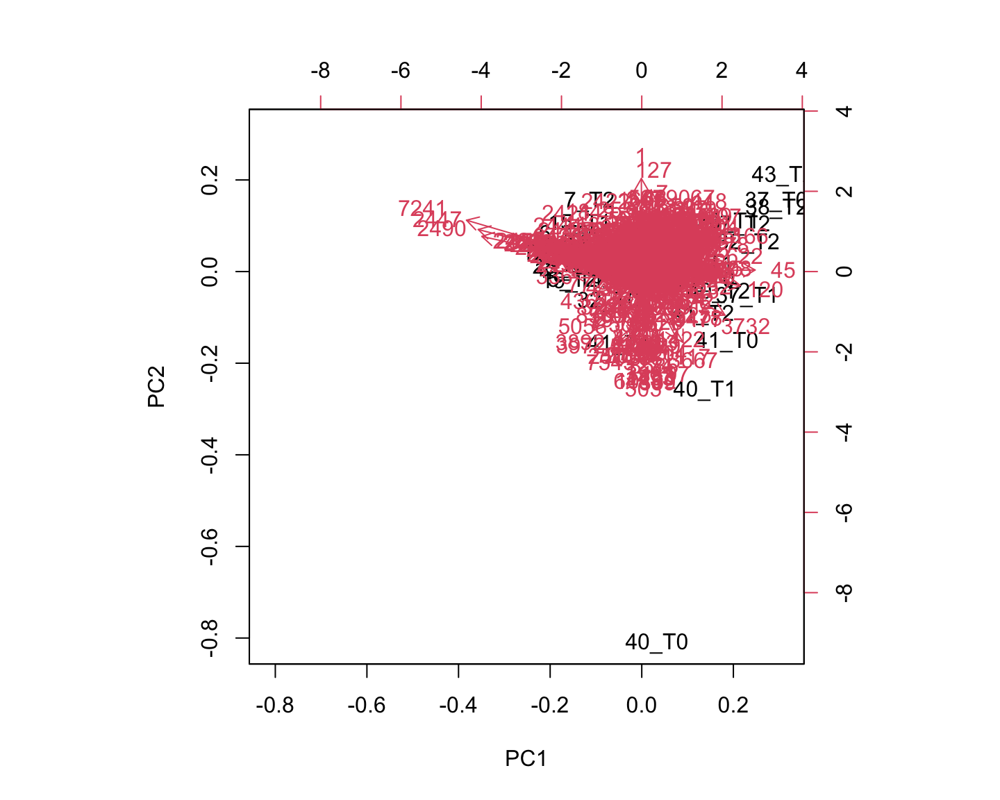
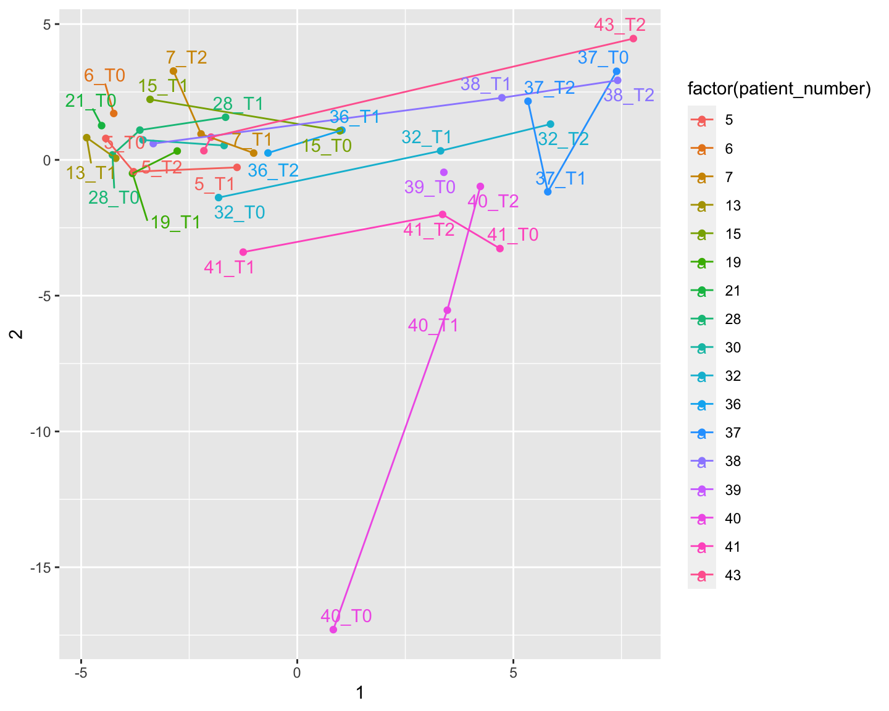
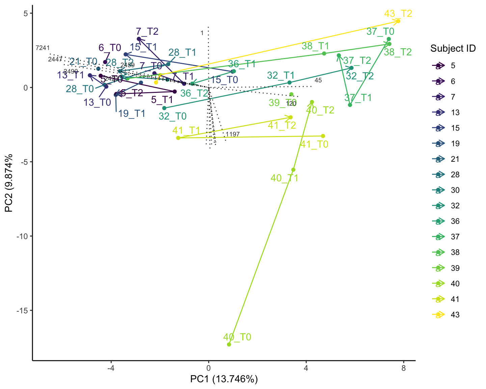
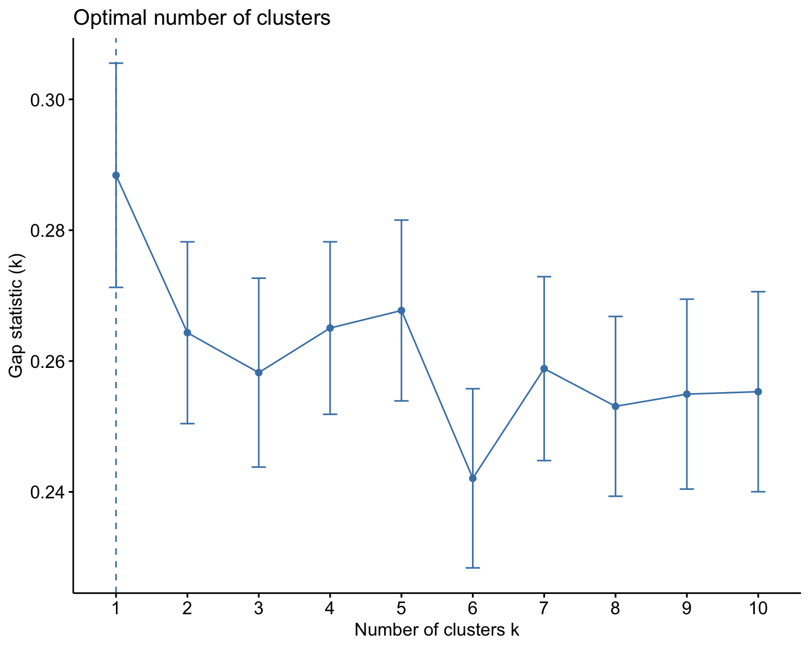
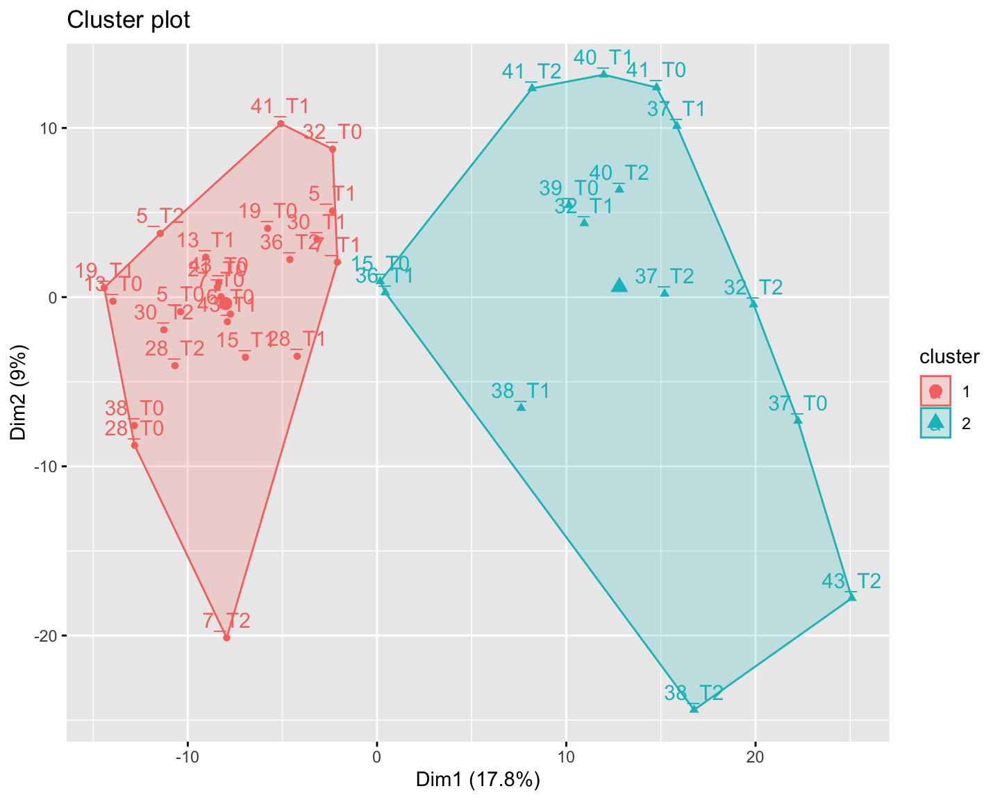

Metabolomics in Microbiome Studies
Cecilia Noecker
Spring 2022
This website contains materials for a hands-on metabolomics analysis tutorial for the BMS microbiome mini-course. The data we will use are from the same study as the previous session, the ongoing Micro-PD trial. Please visit the Setup page for some initial steps to complete prior to the tutorial.
1 Exploratory data analysis
Most of what we’ll do with this dataset falls under the statistical umbrella of “Exploratory Data Analysis.” We have a matrix of unidentified metabolite features. How many? How variable are they? Do they have any technical artifacts? What else do we know about them? Do the largest trends make sense with our other knowledge of this cohort? Assessing these questions is a key prerequisite for eventually testing the primary question: What effects does the antibiotic rifaximin have on subjects with Parkinson’s disease who are being treated with L-Dopa?
1.1 Read in the data and clean it up
First things first: Let’s read in the data and organize it into a format that will be easier to plot, explore and manipulate in R.
We’ll also make sure that the sample IDs in this table can be matched up with our metadata.
NOTE: This step assumes that you have already saved the data files to a folder called “data” in your project folder, and that you have also placed the metadata file in that folder. If you don’t have that file, run the following:
download.file("https://raw.githubusercontent.com/christineolson-ucsf/MicrobiomeTutorialData/main/metadata.tsv", "data/metadata.tsv")library(tidyverse)
library(broom)
library(ggrepel)
library(ggpubr)
library(factoextra)
library(webchem)
library(lmerTest)
met_table1 <- read_delim("data/Urine_PD_POS_FBMN_quant_subsetIn16Smetadata.csv")
annotations <- read_delim("data/PD_Urine_POS_molnetenhancer_annotations_subset.csv")
metadata <- read_delim("data/metadata.tsv")
colnames(met_table1) <- gsub(".mzML Peak area$", "", colnames(met_table1))
colnames(met_table1) <- gsub("^PDUrine_", "", colnames(met_table1))
#met_table1 <- met_table1 %>% filter(`Sample ID` != "Group ID")
#met_table2 <- met_table2 %>% select(-`...32`, -`row identity (all IDs)`)
#colnames(met_table2) <- gsub("-PDUrine.*", "", colnames(met_table2))
#colnames(met_table2)[1:3] <- c("FeatureID", "Mz", "RT")
#dim(met_table2)
metadata1 <- metadata %>% select(12:33)
metadata_diet <- metadata %>% select(every_sample, 52:350)
#Which column names are not in the metadata table?
colnames(met_table1)[!colnames(met_table1) %in% metadata1$every_sample]## [1] "row ID" "row m/z" "row retention time"
## [4] "43_B" "41_B" "38_B"
## [7] "40_B" "39_B" "37_T1-PDUrine_32_T1"
## [10] "32_B" "28_B" "21_B"
## [13] "13_B" "19_B" "15_B"
## [16] "37_B" "07_B" "05_T2"
## [19] "07_T1" "05_T1" "05_B"
## [22] "07_T2" "06_B"colnames(met_table1) <- gsub("^0", "", colnames(met_table1))
colnames(met_table1) <- gsub("B", "T0", colnames(met_table1))
colnames(met_table1)[colnames(met_table1)=="37_T1-PDUrine_32_T1"] <- "37_T1"
colnames(met_table1)[1:3] <- c("FeatureID", "MZ", "RT")
#OK, all good!For some plots, we’ll make a long-form version of this table using the function pivot_longer. “Wide data” is the best format for storing data compactly and doing some types of statistics, while “Long data” is often preferred for summarizing, exploring, and plotting.
We’ll also join this long table with the compound annotations, so that we have some info on each one in the same table as their abundances.
met_table_long <- pivot_longer(met_table1, cols = c(-FeatureID, -MZ, -RT), names_to = "Sample") %>%
mutate(value = as.numeric(value))
met_table_long <- left_join(met_table_long, select(annotations, c(name, CF_class, CF_kingdom, CF_subclass, CF_superclass, Compound_Name, Smiles)), by = c("FeatureID" = "name"))Let’s start our exploratory QC by looking at the distribution of features across m/z and RT. We’ll make normal histograms and also a 2D histogram of features across these properties.
ggplot(met_table1, aes(x = MZ)) + geom_histogram(bins = 100)ggplot(met_table1, aes(x = RT)) + geom_histogram(bins = 100) ## What's going on here?ggplot(met_table1, aes(x = MZ, y = RT)) + geom_bin_2d()What might be going on here?
Another QC question: do we have about the same amount of total signal from each sample? To answer this question, we’ll use a highly useful data wrangling code structure: group_by a variable, summarize to calculate some statistic within each group, and then filter based on the resulting statistic.
tot_signal <- met_table_long %>%
group_by(Sample) %>%
summarize(totSignal = sum(value))
tot_signal %>%
ggplot(aes(x = totSignal)) + geom_histogram()tot_signal %>% filter(totSignal < 5e7)## # A tibble: 1 × 2
## Sample totSignal
## <chr> <dbl>
## 1 40_T0 25259543.Looks pretty good. We might want to consider filtering sample 40_T0, especially if we notice other evidence of technical artifacts that differentiate it from the rest of the samples.
OK, let’s look at the distributions of some of these features. Why are we doing this?
- To see if they are normally distributed or if we should apply a transformation
- To see if there are consistent outlier samples
- To see how different features are from each other
feature_sample <- sample(met_table1$FeatureID, 30)
met_table_long %>% filter(FeatureID %in% feature_sample) %>%
ggplot(aes(x = value)) + geom_histogram() + facet_wrap(~FeatureID, scales = "free_x")Looks like a lot of zeros! How many samples are non-zero for each feature in general? This is a chance to practice using the group_by and summarize functions.
nonzero_count <- met_table_long %>% group_by(FeatureID) %>% summarize(NonZeroCount = length(value[value != 0]))
nonzero_count %>%
ggplot(aes(x = NonZeroCount)) + geom_histogram(binwidth = 1)Wow!! Let’s filter out the features that are present in < 4 samples, since those will be difficult to do any statistics with. How many features does that leave us with?
bad_features <- nonzero_count %>% filter(NonZeroCount < 4) %>% pull(FeatureID)
met_table1 <- met_table1 %>% filter(!FeatureID %in% bad_features)
met_table_long <- met_table_long %>% filter(!FeatureID %in% bad_features)Let’s check some more feature histograms. Would they look better with a log transform?
feature_sample <- sample(met_table1$FeatureID, 30)
met_table_long %>% filter(FeatureID %in% feature_sample) %>%
ggplot(aes(x = value)) + geom_histogram() + facet_wrap(~FeatureID, scales = "free_x")met_table_long %>% filter(FeatureID %in% feature_sample) %>%
ggplot(aes(x = value)) + geom_histogram() + facet_wrap(~FeatureID, scales = "free_x") + scale_x_log10()#Did we lose a particular m/z range?
ggplot(met_table1, aes(x = MZ, y = RT)) + geom_bin_2d()OK, for the remaining features, we’re going to add a “pseudocount” and then apply a log transformation. Why do this?
met_table_long <- met_table_long %>% group_by(FeatureID) %>%
mutate(MinFeatNonzero = min(value[value != 0])) %>%
mutate(log10value = log10(value + 0.5*MinFeatNonzero))More histograms…
feature_sample <- sample(met_table1$FeatureID, 30)
met_table_long %>% filter(FeatureID %in% feature_sample) %>%
ggplot(aes(x = log10value)) + geom_histogram() + facet_wrap(~FeatureID, scales = "free_x")OK, let’s try proceeding with this version of our data. Which features are most abundant?
met_table_long %>% group_by(FeatureID, MZ, RT, CF_class, CF_subclass, Compound_Name) %>%
summarize(sumArea = sum(value), medianArea = median(value)) %>%
arrange(desc(sumArea)) %>%
print(n=20)## # A tibble: 743 × 8
## # Groups: FeatureID, MZ, RT, CF_class, CF_subclass [743]
## FeatureID MZ RT CF_class CF_subclass Compound_Name sumArea medianArea
## <dbl> <dbl> <dbl> <chr> <chr> <chr> <dbl> <dbl>
## 1 1 114. 1.73 Carboxyli… Amino acid… <NA> 7.21e7 1806246.
## 2 7 265. 7.63 Carboxyli… Amino acid… PHENYLACETYL… 5.89e7 1028111.
## 3 5 328. 6.88 Prenol li… nan <NA> 5.44e7 1409133.
## 4 9 372. 7.02 Prenol li… nan <NA> 4.93e7 1177185.
## 5 38 685. 17.2 no matches no matches <NA> 4.93e7 1253852.
## 6 67 763. 17.2 Glyceroph… Glyceropho… <NA> 4.29e7 1111178.
## 7 15 416. 7.16 Prenol li… nan <NA> 4.01e7 979806.
## 8 10 284. 6.75 Prenol li… nan <NA> 3.33e7 854509.
## 9 1665 781. 16.4 no matches no matches <NA> 3.20e7 878043.
## 10 2420 399. 8.02 Prenol li… nan <NA> 3.11e7 844932.
## 11 47 531. 8.48 Prenol li… nan <NA> 3.07e7 804832.
## 12 23 460. 7.31 Prenol li… nan <NA> 2.95e7 692868.
## 13 40 371. 7.16 Prenol li… Pyranocoum… <NA> 2.87e7 732837.
## 14 2419 443. 8.21 Prenol li… nan <NA> 2.83e7 798811.
## 15 26 576. 8.48 Steroids … Steroidal … <NA> 2.79e7 705151.
## 16 71 232. 11.2 Benzene a… Anilides <NA> 2.71e7 675537.
## 17 69 230. 11.2 Benzene a… Anilides <NA> 2.70e7 669430.
## 18 25 620. 8.58 Steroids … Steroidal … <NA> 2.64e7 665899.
## 19 108 520. 7.60 Phenol et… nan <NA> 2.53e7 594601.
## 20 211 724. 8.81 Prenol li… nan <NA> 2.46e7 641207.
## # … with 723 more rowsWhat other QC steps might we consider? Another common step would be to filter out features with high coefficient of variation across technical replicates (although sometimes this is performed in pre-processing).
Let’s also take a quick look at the annotations generated with GNPS and MolNetEnhancer:
# How many compounds have a name? Not very many!
annotations %>% summarize(length(Compound_Name[!is.na(Compound_Name)]), length(Compound_Name[is.na(Compound_Name)]))## # A tibble: 1 × 2
## `length(Compound_Name[!is.na(Compound_Name)])` `length(Compound_Name[is.na(C…`
## <int> <int>
## 1 54 1025ggplot(annotations, aes(x = CF_kingdom, fill = CF_class)) + geom_bar(stat = "count") + scale_fill_viridis_d()1.2 Principal component analysis
Principal component analysis (PCA) is a classic technique that tries to reduce the variation in a multifaceted dataset into as few dimensions as possible. PCA, PCoA, MDS, and NMDS are all different but related methods for performing the task of dimensional reduction or ordination - i.e. representing your sample profiles in a 2-D plot. PCA may be the simplest and most interpretable of these tools, but it only works well on appropriately normalized and approximately normally distributed data.
PCA decomposes the data into orthogonal principal components that delineate the largest axes of variation in the data. It also provides loadings that tell us the relative contribution of each of our variables (metabolite features) to those axes.
pca1 <- met_table_long %>%
pivot_wider(names_from = FeatureID, values_from = log10value, id_cols = Sample) %>%
column_to_rownames("Sample") %>%
as.matrix() %>%
prcomp()
biplot(pca1)
How much of the variation in our data is explained by each principal component?
pca_summary <- pca1 %>% tidy(matrix = "pcs")
ggplot(pca_summary, aes(x = PC, y = cumulative)) + geom_point() + geom_line()A lot of dimensions of variation in this data! Let’s plot the first two principle components anyway.
pca_tab <- pca1 %>% tidy(matrix = "samples")
pca_tab_wide <- pca_tab %>% filter(PC < 6) %>% pivot_wider(names_from = PC, values_from = value)
pca_tab_wide %>%
ggplot(aes(x = `1`, y = `2`)) + geom_point() + geom_text(aes(label = row))pca_tab_wide %>%
ggplot(aes(x = `1`, y = `2`)) + geom_point() + geom_text_repel(aes(label = row))Next, let’s add some metadata to this plot!
pca_tab_wide <- pca_tab_wide %>% left_join(metadata1, by = c("row" = "every_sample"))
pca_tab_wide %>% ggplot(aes(x = `1`, y = `2`, color = factor(patient_number))) + geom_point() + geom_line() + geom_text_repel(aes(label = row))
How to get the line to label in order?
pca_tab_wide %>% arrange(sample_timepoint) %>% ggplot(aes(x = `1`, y = `2`, color = factor(patient_number))) + geom_point() + geom_path(arrow = arrow()) + geom_text_repel(aes(label = row))How to get less ugly colors?
pca_tab_wide %>% arrange(sample_timepoint) %>% ggplot(aes(x = `1`, y = `2`, color = factor(patient_number))) + geom_point() + geom_path() + geom_text_repel(aes(label = row)) +
scale_color_viridis_d(name = "Subject ID") + theme_classic() Add summary info to labels and save the plot to a variable
pca_plot_allSamps <- pca_tab_wide %>% arrange(sample_timepoint) %>% ggplot(aes(x = `1`, y = `2`, color = factor(patient_number))) + geom_point() + geom_path(arrow = arrow(length = unit(0.1, "in"))) + geom_text_repel(aes(label = row)) +
scale_color_viridis_d(name = "Subject ID") + theme_classic() +
xlab(paste0("PC1 (", round(pca_summary$percent[1]*100, digits = 3), "%)")) +
ylab(paste0("PC2 (", round(pca_summary$percent[2]*100, digits = 3), "%"))
pca_plot_allSampsIn the spirit of exploring the data, try plotting PCs 3 vs 4 also.
1.2.1 What features explain the most variation?
pca_loadings <- pca1 %>% tidy(matrix = "loadings")
hist(pca_loadings$value)top_loadings <- pca_loadings %>% filter(PC %in% 1:2) %>%
pivot_wider(names_from = "PC", values_from = "value") %>%
slice_max(sqrt(`1`^2 + `2`^2), n=15)
top_loadings %>%
ggplot(aes(x = `1`, y = `2`)) + geom_segment(xend = 0, yend = 0)pca_plot_allSamps + geom_segment(data = top_loadings, aes(x = `1`*30, y = `2`*30), inherit.aes = F, xend = 0, yend = 0, alpha = 0.8, linetype = 3) + geom_text_repel(data = top_loadings, aes(x = `1`*30, y = `2`*30, label = column), inherit.aes = F, alpha = 0.8, size = 2.5)
met_id_sub <- met_table_long %>%
select(FeatureID, MZ, RT, CF_class, CF_subclass, Compound_Name) %>%
distinct() %>%
mutate(FeatureID = as.character(FeatureID))
top_loadings <- top_loadings %>%
left_join(met_id_sub, by = c("column" = "FeatureID"))
top_loadings %>% arrange(`1`) #%>% View()# What are these?## # A tibble: 15 × 8
## column `1` `2` MZ RT CF_class CF_subclass Compound_Name
## <chr> <dbl> <dbl> <dbl> <dbl> <chr> <chr> <chr>
## 1 7241 -0.217 0.0751 503. 9.14 Prenol lipids nan Spectral Mat…
## 2 2447 -0.203 0.0615 442. 9.05 Prenol lipids nan <NA>
## 3 2490 -0.198 0.0514 465. 9.01 no matches no matches <NA>
## 4 2423 -0.123 0.0362 420. 8.99 Prenol lipids nan <NA>
## 5 2459 -0.120 0.0362 451. 9.05 no matches no matches <NA>
## 6 6483 -0.00334 -0.127 114. 2.05 Carboxylic a… Amino acid… <NA>
## 7 1 -0.000513 0.136 114. 1.73 Carboxylic a… Amino acid… <NA>
## 8 503 0.00175 -0.137 328. 7.24 Prenol lipids nan <NA>
## 9 10162 0.00398 -0.128 372. 7.35 Prenol lipids nan <NA>
## 10 1493 0.00778 -0.124 708. 9.10 Steroids and… Steroidal … <NA>
## 11 1889 0.00941 -0.129 532. 8.71 Steroids and… Steroidal … <NA>
## 12 1753 0.00965 -0.123 416. 7.46 Prenol lipids nan <NA>
## 13 1197 0.0232 -0.119 620. 8.97 Steroids and… Steroidal … <NA>
## 14 120 0.122 -0.0204 311. 7.44 Prenol lipids nan <NA>
## 15 45 0.140 0.00228 462. 16.4 Flavonoids Flavonoid … <NA>top_loadings %>% arrange(`2`) #%>% View() # What are these?## # A tibble: 15 × 8
## column `1` `2` MZ RT CF_class CF_subclass Compound_Name
## <chr> <dbl> <dbl> <dbl> <dbl> <chr> <chr> <chr>
## 1 503 0.00175 -0.137 328. 7.24 Prenol lipids nan <NA>
## 2 1889 0.00941 -0.129 532. 8.71 Steroids and… Steroidal … <NA>
## 3 10162 0.00398 -0.128 372. 7.35 Prenol lipids nan <NA>
## 4 6483 -0.00334 -0.127 114. 2.05 Carboxylic a… Amino acid… <NA>
## 5 1493 0.00778 -0.124 708. 9.10 Steroids and… Steroidal … <NA>
## 6 1753 0.00965 -0.123 416. 7.46 Prenol lipids nan <NA>
## 7 1197 0.0232 -0.119 620. 8.97 Steroids and… Steroidal … <NA>
## 8 120 0.122 -0.0204 311. 7.44 Prenol lipids nan <NA>
## 9 45 0.140 0.00228 462. 16.4 Flavonoids Flavonoid … <NA>
## 10 2423 -0.123 0.0362 420. 8.99 Prenol lipids nan <NA>
## 11 2459 -0.120 0.0362 451. 9.05 no matches no matches <NA>
## 12 2490 -0.198 0.0514 465. 9.01 no matches no matches <NA>
## 13 2447 -0.203 0.0615 442. 9.05 Prenol lipids nan <NA>
## 14 7241 -0.217 0.0751 503. 9.14 Prenol lipids nan Spectral Mat…
## 15 1 -0.000513 0.136 114. 1.73 Carboxylic a… Amino acid… <NA>Exercise: Go back, filter out 40_T0, and see what changes. Do you think it is valid to remove this sample?
If we suspect that some of these features are due to a batch effect, how could we address this? Look up out the ComBat method.
2 What are some other questions we might want to answer about these features?
2.1 Are samples from the same person more similar than samples from different people? (Intra-subject vs inter-subject metabolite variation)
We’ll break down the problem into steps: 1) calculate pairwise distances between samples 2) compare between samples from the same vs different people.
Pairwise distances between samples:
sample_order <- sort(unique(met_table_long$Sample))
sample_dists <- met_table_long %>%
arrange(Sample) %>%
pivot_wider(names_from = "FeatureID", values_from = "log10value", id_cols = "Sample") %>%
select(-Sample) %>%
as.matrix() %>%
dist(method = "euclidean") %>%
as.matrix() %>%
as_tibble() %>%
mutate(Sample = sample_order)
colnames(sample_dists) <- c(sample_order, "Sample")Compare inter vs intra:
sample_dists <- sample_dists %>%
pivot_longer(-Sample, names_to = "Sample2") %>%
filter(Sample < Sample2) %>%
mutate(Subject = gsub("_T[0-2]$", "", Sample), Subject2 = gsub("_T[0-2]$", "", Sample2)) %>%
mutate(Type = ifelse(Subject == Subject2, "Intra", "Inter"))
ggplot(sample_dists, aes(x = Type, y = value)) + geom_boxplot(outlier.shape = NA) + geom_jitter(height = 0, width = 0.25) ggplot(sample_dists, aes(x = Type, y = value)) + geom_boxplot(outlier.shape = NA) + geom_jitter(height = 0, width = 0.25) + stat_compare_means(method = "wilcox.test")What about T0->T1 vs T1->T2?
sample_dists <- sample_dists %>%
mutate(TimeComparison = case_when(
Type == "Inter" ~ "Inter",
grepl("T0", Sample) & grepl("T1", Sample2) ~ "T0_T1",
grepl("T0", Sample) & grepl("T2", Sample2) ~ "T0_T2",
grepl("T1", Sample) & grepl("T2", Sample2) ~ "T1_T2"
))
ggplot(sample_dists, aes(x = TimeComparison, y = value)) + geom_boxplot(outlier.shape = NA) + geom_jitter(height = 0, width = 0.25, aes(color = Subject)) + scale_color_viridis_d()2.2 What features are differentially abundant by sex, age, and time?
Should we include Sample 40_T0 or not?
met_table_long <- met_table_long %>%
left_join(metadata1, by = c("Sample" = "every_sample"))
sex_age_model_results <- met_table_long %>% filter(Sample != "40_T0") %>%
group_by(FeatureID) %>%
do(
lmer(log10value~gender+age+sample_timepoint+(1|patient_number), data=.) %>%
summary() %>%
.$coefficients %>%
as.data.frame() %>%
rownames_to_column("Term")
)
sex_age_model_results <- sex_age_model_results %>%
filter(Term != "(Intercept)") %>%
group_by(Term) %>%
mutate(FDRCorrect = p.adjust(`Pr(>|t|)`, method = "BH"))
ggplot(sex_age_model_results, aes(x = `Pr(>|t|)`)) + geom_histogram() + facet_wrap(~Term) # probably real signal, but underpoweredsignif_features <- sex_age_model_results %>% filter(FDRCorrect < 0.25)
signif_features %>%
mutate(FeatureID = as.character(FeatureID)) %>%
left_join(met_id_sub, by = "FeatureID")## # A tibble: 5 × 13
## # Groups: Term [2]
## FeatureID Term Estimate `Std. Error` df `t value` `Pr(>|t|)` FDRCorrect
## <chr> <chr> <dbl> <dbl> <dbl> <dbl> <dbl> <dbl>
## 1 7 age 0.0282 0.00654 34.0 4.32 0.000130 0.0966
## 2 127 age 0.0349 0.00936 34.0 3.73 0.000705 0.174
## 3 152 age 0.0241 0.00611 34.0 3.94 0.000380 0.141
## 4 258 gender -0.278 0.0705 34.0 -3.95 0.000372 0.160
## 5 4286 gender 0.307 0.0787 34.0 3.90 0.000431 0.160
## # … with 5 more variables: MZ <dbl>, RT <dbl>, CF_class <chr>,
## # CF_subclass <chr>, Compound_Name <chr>## Not much consistent signal for time
sex_age_model_results %>% filter(grepl("T1", Term)) %>% arrange(`Pr(>|t|)`)## # A tibble: 743 × 8
## # Groups: Term [1]
## FeatureID Term Estimate `Std. Error` df `t value` `Pr(>|t|)` FDRCorrect
## <dbl> <chr> <dbl> <dbl> <dbl> <dbl> <dbl> <dbl>
## 1 6911 sample… 0.838 0.232 24.9 3.62 0.00132 0.983
## 2 7709 sample… 0.730 0.251 26.0 2.91 0.00731 0.990
## 3 245 sample… 0.278 0.0984 25.8 2.82 0.00909 0.990
## 4 260 sample… 0.531 0.206 34.0 2.58 0.0143 0.990
## 5 7531 sample… -0.245 0.0959 34.0 -2.56 0.0151 0.990
## 6 7346 sample… -0.332 0.128 21.9 -2.60 0.0165 0.990
## 7 5277 sample… -0.285 0.111 25.6 -2.56 0.0169 0.990
## 8 3743 sample… -0.474 0.184 23.1 -2.57 0.0170 0.990
## 9 5600 sample… 0.251 0.102 34.0 2.47 0.0189 0.990
## 10 9082 sample… -0.144 0.0566 21.4 -2.54 0.0190 0.990
## # … with 733 more rowssex_age_model_results %>% filter(grepl("T2", Term)) %>% arrange(`Pr(>|t|)`)## # A tibble: 743 × 8
## # Groups: Term [1]
## FeatureID Term Estimate `Std. Error` df `t value` `Pr(>|t|)` FDRCorrect
## <dbl> <chr> <dbl> <dbl> <dbl> <dbl> <dbl> <dbl>
## 1 316 sample… 0.367 0.107 25.9 3.42 0.00206 0.543
## 2 86 sample… 0.497 0.152 27.8 3.26 0.00295 0.543
## 3 160 sample… -0.239 0.0746 25.9 -3.21 0.00353 0.543
## 4 6372 sample… 0.463 0.151 34.0 3.07 0.00424 0.543
## 5 3736 sample… -0.287 0.0951 34.0 -3.01 0.00486 0.543
## 6 7531 sample… -0.295 0.102 34.0 -2.89 0.00661 0.543
## 7 4305 sample… 0.269 0.0916 25.5 2.93 0.00701 0.543
## 8 3793 sample… 0.307 0.108 24.3 2.84 0.00904 0.543
## 9 4292 sample… 0.218 0.0786 27.7 2.78 0.00973 0.543
## 10 2008 sample… -0.589 0.216 34.0 -2.72 0.0101 0.543
## # … with 733 more rowsLet’s plot the significant features!
met_table_long %>% filter(FeatureID %in% signif_features$FeatureID) %>%
ggplot(aes(x = age, y = log10value, color = factor(gender))) + geom_point() + geom_path(aes(group = patient_number)) + facet_wrap(~FeatureID, scales = "free")What have we learned? - No features associated with study time point (makes sense since we expect time point to have no effect for half the cohort) - Some evidence of clustering which should be investigated further - A small number of urine metabolites associated with sex and age in a Parkinson’s disease cohort
2.3 Do our samples naturally cluster into groups?
To answer this question, we’ll use the factoextra package to do k-means clustering.
met_mat <- met_table_long %>%
arrange(Sample) %>%
pivot_wider(names_from = "FeatureID", values_from = "log10value", id_cols = "Sample") %>%
column_to_rownames("Sample") %>%
as.matrix()
fviz_nbclust(met_mat, kmeans, method = "silhouette") ## Higher values mean more distinguished clustersfviz_nbclust(met_mat, kmeans, method = "gap_stat") ## Which value of k gives us the most non-random distribution of points across the clusters
final_clust <- kmeans(met_mat, centers = 3)
fviz_cluster(final_clust, data = met_mat)Repeat without our potential outlier sample?
met_mat <- met_table_long %>%
filter(Sample != "40_T0") %>%
arrange(Sample) %>%
pivot_wider(names_from = "FeatureID", values_from = "log10value", id_cols = "Sample") %>%
column_to_rownames("Sample") %>%
as.matrix()
fviz_nbclust(met_mat, kmeans, method = "silhouette") ## Higher values mean more distinguished clustersfviz_nbclust(met_mat, kmeans, method = "gap_stat") ## Which value of k gives us the most non-random distribution of points across the clustersfinal_clust <- kmeans(met_mat, centers = 2)
fviz_cluster(final_clust, data = met_mat)
2.4 Bonus: Are there metabolites associated with the microbiome?
To start to explore this, we’ll do a fairly straightforward analysis: what are the strongest rank-based correlations between individual ASVs/microbes and metabolite features?
First, let’s read in the ASV table from yesterday, normalize it, and set it up.
library(qiime2R)
asv_table <- read_delim("data/asv_table.csv")
colnames(asv_table) <- gsub("-", "_", gsub("MicroPD-", "", colnames(asv_table)))
colnames(asv_table) %in% met_table_long$Sample## [1] FALSE TRUE TRUE TRUE TRUE FALSE FALSE TRUE TRUE TRUE TRUE TRUE
## [13] FALSE TRUE TRUE FALSE TRUE TRUE FALSE TRUE FALSE FALSE TRUE TRUE
## [25] TRUE FALSE TRUE TRUE TRUE TRUE TRUE FALSE TRUE TRUE TRUE TRUE
## [37] TRUE TRUE TRUE TRUE TRUE FALSE TRUE TRUE TRUE TRUE TRUE TRUE
## [49] TRUE TRUE TRUEcolnames(asv_table)[1] <- "ASV"
asv_table <- asv_table %>% select("ASV", unique(met_table_long$Sample))
asv_tax <- read_delim("data/taxonomy.csv")
colnames(asv_tax)[1] <- "ASV"
asv_table_norm <- asv_table %>%
column_to_rownames("ASV") %>%
as.matrix() %>%
make_clr() %>%
as_tibble() %>%
mutate(ASV = asv_table$ASV)
asv_table_long <- pivot_longer(asv_table_norm, -ASV, names_to = "Sample", values_to = "CLR")We’re going to filter to only look at ASVs that are present in at least 6 samples.
asv_samp_frequency <- asv_table %>%
pivot_longer(-ASV, names_to = "Sample", values_to = "Count") %>%
group_by(ASV) %>%
summarize(nSamps = length(Count[Count != 0]))
asvs_keep <- asv_samp_frequency %>%
filter(nSamps > 5) %>%
pull(ASV)
met_table_sub <- met_table_long %>% filter(Sample != "40_T0")Next, we’ll calculate a whole lot of correlations. This will take a little bit to run - if you want to speed it up, you can filter the ASVs and/or metabolite features more strictly.
corr_table <- asv_table_long %>%
filter(ASV %in% asvs_keep) %>%
left_join(select(met_table_sub, FeatureID, Sample, log10value)) %>%
filter(!is.na(FeatureID)) %>%
group_by(ASV, FeatureID) %>%
summarize(
cor.test(CLR, log10value, method = "spearman") %>% tidy()
)Multiple hypothesis correction is very important in this context!!
corr_table <- mutate(corr_table,
FDRCorrected = p.adjust(p.value, method = "BH"))
corr_table %>% ggplot(aes(x = p.value)) + geom_histogram()OK, what do we know about the strongest correlations?
corr_table <- corr_table %>%
mutate(FeatureID = as.character(FeatureID)) %>%
left_join(met_id_sub, by = "FeatureID") %>%
left_join(asv_tax, by = "ASV")
corr_table %>% filter(FDRCorrected < 0.05) %>%
arrange(FDRCorrected) #%>% View()## # A tibble: 1,331 × 20
## # Groups: ASV [51]
## ASV FeatureID estimate statistic p.value method alternative FDRCorrected
## <chr> <chr> <dbl> <dbl> <dbl> <chr> <chr> <dbl>
## 1 ASV_1081 731 0.666 3300. 3.70e-6 Spear… two.sided 0.00275
## 2 ASV_1199 731 0.666 3304. 3.77e-6 Spear… two.sided 0.00280
## 3 ASV_1252 731 0.663 3326. 4.18e-6 Spear… two.sided 0.00310
## 4 ASV_413 273 0.663 3330. 4.26e-6 Spear… two.sided 0.00316
## 5 ASV_1252 73 0.620 3756. 2.57e-5 Spear… two.sided 0.00566
## 6 ASV_1252 473 0.638 3574 1.95e-5 Spear… two.sided 0.00566
## 7 ASV_1252 2554 -0.615 15961. 3.05e-5 Spear… two.sided 0.00566
## 8 ASV_1483 473 0.643 3528 1.63e-5 Spear… two.sided 0.00607
## 9 ASV_1483 731 0.635 3602. 1.39e-5 Spear… two.sided 0.00607
## 10 ASV_1481 473 0.647 3490 1.41e-5 Spear… two.sided 0.00613
## # … with 1,321 more rows, and 12 more variables: MZ <dbl>, RT <dbl>,
## # CF_class <chr>, CF_subclass <chr>, Compound_Name <chr>, Kingdom <chr>,
## # Phylum <chr>, Class <chr>, Order <chr>, Family <chr>, Genus <chr>,
## # Species <chr>## How many corelations for each feature and ASV?
corr_table %>% filter(FDRCorrected < 0.05) %>%
group_by(ASV, Genus, Species) %>% count() %>%
arrange(desc(n))## # A tibble: 51 × 4
## # Groups: ASV, Genus, Species [51]
## ASV Genus Species n
## <chr> <chr> <chr> <int>
## 1 ASV_1481 Mediterraneibacter <NA> 152
## 2 ASV_1483 Mediterraneibacter <NA> 134
## 3 ASV_1252 Mediterraneibacter <NA> 125
## 4 ASV_1081 Mediterraneibacter <NA> 124
## 5 ASV_1335 Mediterraneibacter <NA> 104
## 6 ASV_1106 Mediterraneibacter <NA> 99
## 7 ASV_1199 Mediterraneibacter <NA> 99
## 8 ASV_2139 Blautia <NA> 96
## 9 ASV_1453 Mediterraneibacter <NA> 88
## 10 ASV_1264 Mediterraneibacter <NA> 56
## # … with 41 more rowscorr_table %>% filter(FDRCorrected < 0.05) %>%
group_by(FeatureID, Compound_Name, CF_class) %>% count() %>%
arrange(desc(n))## # A tibble: 226 × 4
## # Groups: FeatureID, Compound_Name, CF_class [226]
## FeatureID Compound_Name CF_class n
## <chr> <chr> <chr> <int>
## 1 112 <NA> Prenol lipids 14
## 2 25 <NA> Steroids and steroid derivatives 14
## 3 47 <NA> Prenol lipids 14
## 4 51 <NA> Steroids and steroid derivatives 14
## 5 26 <NA> Steroids and steroid derivatives 13
## 6 311 <NA> Fatty Acyls 13
## 7 324 <NA> no matches 13
## 8 445 <NA> Carboxylic acids and derivatives 13
## 9 473 <NA> Fatty Acyls 13
## 10 69 <NA> Benzene and substituted derivatives 13
## # … with 216 more rowsLet’s plot the strongest correlation.
combined_tab <- met_table_long %>%
filter(FeatureID==273) %>%
left_join(filter(asv_table_long, ASV=="ASV_413"), by = "Sample") %>%
arrange(sample_timepoint)
signif_corr_plot <- ggplot(combined_tab, aes(x = CLR, y = log10value, color = factor(patient_number))) +
geom_point() + scale_color_viridis_d() +
xlab("CLR-normalized abundance of ASV413") +
ylab("log10 peak area of feature 273")
signif_corr_plot## What's happening within each subject?
signif_corr_plot + geom_path(aes(group = patient_number), arrow = arrow(length = unit(0.1, "in")))
What are some reasons why a gut microbe’s abundance might be correlated with a metabolite in urine? How can we test specific hypotheses on their relationship?
There are many other ways to integrate microbiome and metabolome data to answer different questions! Some of these include:
- (sparse) canonical correlation analysis
- Procrustes analysis
- Mantel test
- MIMOSA2